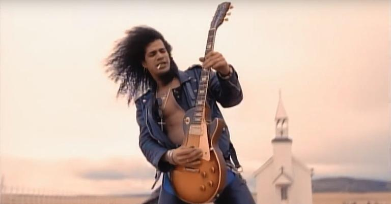

Gostou dessa página?
🎵Ideia e Letra
Toda música começa com uma ideia. Ela pode surgir de uma experiência, de um sentimento, de uma história, de uma lembrança ou até de uma situação do dia a dia. Às vezes, uma simples frase ou uma melodia que aparece na cabeça já pode ser o começo de uma nova música. Depois de encontrar a ideia principal, vem a criação da **letra**. O compositor precisa transformar pensamentos e sentimentos em palavras, escolhendo como quer contar sua história. Algumas músicas contam acontecimentos, enquanto outras expressam emoções, fazem críticas ou simplesmente procuram transmitir uma sensação. Um dos elementos mais importantes da letra é o **refrão**. Normalmente, ele é a parte que mais se repete e que fica mais facilmente na memória de quem ouve. Já os versos ajudam a desenvolver a história ou a mensagem da música. Também é possível trabalhar com rimas, repetições e diferentes formas de organizar as palavras. Porém, nem toda música precisa rimar: o mais importante é que a letra combine com a mensagem e com a proposta da composição. Assim, antes de existir uma música completa, existe uma ideia que precisa ser transformada em palavras. Depois disso, essas palavras poderão ganhar melodia, ritmo e instrumentos, dando vida à composição.
🎶Melodia e Harmonia
Depois que a ideia e a letra estão prontas, chega o momento de transformar as palavras em música. É aqui que entram dois elementos fundamentais: **melodia e harmonia**. A **melodia** é a sequência de notas que forma a parte que conseguimos cantar ou assobiar. É, muitas vezes, aquilo que mais reconhecemos em uma música. O compositor escolhe diferentes notas e alturas para criar uma melodia que combine com a letra e transmita a emoção desejada. Já a **harmonia** acontece quando diferentes notas e acordes são combinados para acompanhar a melodia. Os acordes ajudam a criar diferentes sensações, como alegria, tensão, tranquilidade ou tristeza. Por isso, mudar os acordes pode transformar completamente a atmosfera de uma música. Outro elemento importante é o **ritmo**, que organiza a duração e a repetição dos sons e silêncios. Ele ajuda a determinar se uma música será mais lenta, rápida, dançante ou calma. Melodia, harmonia e ritmo trabalham juntos. Uma letra triste pode ganhar uma melodia mais suave e acordes que reforcem essa sensação. Já uma música animada pode utilizar uma melodia mais energética e um ritmo mais acelerado. No final dessa etapa, aquilo que começou apenas como uma ideia e uma letra já começa a ter uma identidade musical própria.
🎙️ Produção e Lançamento
Àudio sobre todo esse processo
🎧 Do Zero Até a Música
Áudiodescrição: Você já parou para pensar em como uma música que ouvimos todos os dias é criada? Quando escutamos uma música pronta, normalmente prestamos atenção apenas à voz, à melodia ou ao ritmo. Porém, por trás de alguns minutos de música existem várias etapas, desde a primeira ideia até o momento em que ela chega aos nossos ouvidos. Tudo começa com uma **ideia**. Ela pode surgir de uma experiência pessoal, de um sentimento, de uma história, de uma lembrança ou até de uma situação simples do cotidiano. A partir dessa ideia, o compositor começa a desenvolver o tema e transforma seus pensamentos em palavras. É aí que surge a **letra**. Ela pode contar uma história, transmitir uma emoção, fazer uma crítica ou simplesmente criar uma determinada atmosfera. Os versos desenvolvem a ideia da música, enquanto o refrão geralmente concentra a parte mais marcante e fácil de lembrar. Depois, chega o momento de transformar essas palavras em música. Para isso, são criados a **melodia, a harmonia e o ritmo* A melodia é a sequência de notas que conseguimos cantar ou assobiar. A harmonia combina diferentes notas e acordes para acompanhar a melodia e ajudar a criar determinadas sensações. Já o ritmo organiza os sons e silêncios e influencia diretamente a velocidade e o estilo da música. Quando esses elementos começam a funcionar juntos, a composição ganha uma identidade própria. Mas ainda falta transformar essa composição em uma gravação Na etapa de **produção**, são escolhidos os instrumentos e sons que farão parte da música. Dependendo do estilo, podem aparecer bateria, guitarra, violão, piano, baixo, instrumentos eletrônicos e muitos outros. Depois, os músicos e cantores gravam suas partes. Essas gravações passam pela **mixagem**, em que os volumes, efeitos e diferentes elementos são ajustados para que tudo funcione bem em conjunto. Em seguida vem a **masterização**, que é uma das etapas finais e prepara a música para ser reproduzida em diferentes aparelhos e plataformas. Finalmente, a música está pronta para ser lançada. Atualmente, os artistas podem disponibilizá-la em plataformas de streaming e também divulgá-la por meio das redes sociais, vídeos, shows e outros meios. Então, da próxima vez que você ouvir uma música, lembre-se de que aqueles poucos minutos são o resultado de um processo muito maior. Uma música pode começar com **uma simples ideia**, mas passa por criatividade, escrita, melodia, harmonia, ritmo, gravação e produção até finalmente chegar ao público. **Esse é o caminho de uma música: uma ideia que se transforma em letra, a letra que ganha música e a música que, depois de produzida, ganha vida através de quem a escuta.**